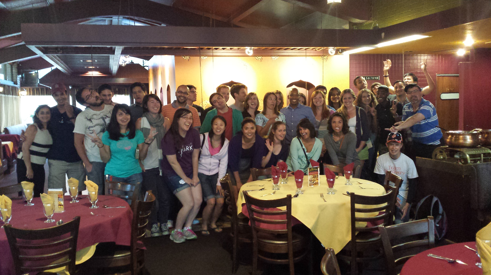

Teaching and Learning
Teaching and Learning Quantitative Skills in R

I believe we learn best by doing, and data analysis provides an avenue for teaching and learning quantitative skills. Under the guidance of Nick Horton and Susan Holmes, I gained intermediate competency in biostatistics with R, and I have been passionate about sharing that competency with others. I have trained 4 individuals (a technician, a dentist, a high school student, and a study coordinator) who had no prior experience programming how to use R to solve a variety of different problems. Examples of work these individuals undertook with me are provided.
Preparing students for graduate school
 I am passionate about helping students to develop the soft skills that are required for the navigation of a successful career in the scientific enterprise. As a graduate student, I worked part time for the Stanford Biosciences ADVANCE Summer Institute, a program designed to facilitate the transition of under-represented students into graduate work at Stanford. Together with the ADVANCE team, I investigated the impact that the program has on the social and academic preparedness of matriculating graduate students. Ultimately, I see myself running similar versions of this program, helping students to acquire the soft skills needed to become successful scientists, whether in industry or in academia.
Teaching Experience

Virology
I led discussion sections for the Human Virosphere (MI 216) at Stanford University. In addition, I lectured during section for Humans & Viruses (MI 155A / MI 155B) at Stanford. The image to the right was taken after the final review session for the yearlong course Humans & Viruses. Students in that course asked me to lecture, during section, since they were having a difficult time assimilating the information that was presented in the course. To help students organize the information they were responsible for remembering, I developed a series of section sheets where students could record information during lecture. These sheets were meant to serve as study guides to facilitate student integration of course material. A sample of these materials is provided:
Ecology
 I also had the opportunity to lecture once per week for the field ecology course required of all Biology majors at Stanford (Bio44Y, Stanford). Over the course of the quarter, ~45 students collected and analyzed data from experimental field plots (shown in the image on the right) to examine the impact of herbivory, among other factors, on the woody encroachment of Baccharis pilularis into grasslands at the Jasper Ridge Biological Preserve. In addition to grading problem sets, I critiqued student lab reports, which were meant to be written in the form of a scientific manuscript, giving students the opportunity to improve their final reports. Student evaluations for this course are available upon request.
I also had the opportunity to lecture once per week for the field ecology course required of all Biology majors at Stanford (Bio44Y, Stanford). Over the course of the quarter, ~45 students collected and analyzed data from experimental field plots (shown in the image on the right) to examine the impact of herbivory, among other factors, on the woody encroachment of Baccharis pilularis into grasslands at the Jasper Ridge Biological Preserve. In addition to grading problem sets, I critiqued student lab reports, which were meant to be written in the form of a scientific manuscript, giving students the opportunity to improve their final reports. Student evaluations for this course are available upon request.
- Example #1 of feedback given on a student lab report for Bio 44Y (ecology)
- Example #2 of feedback given on a student lab report for Bio 44Y (ecology)
Teaching Interests
I’m interested in teaching lecture or discussion-based courses in virology, science writing, statistics for biology with R, and the scientific enterprise. I am also prepared to teach project-based microbiology courses.